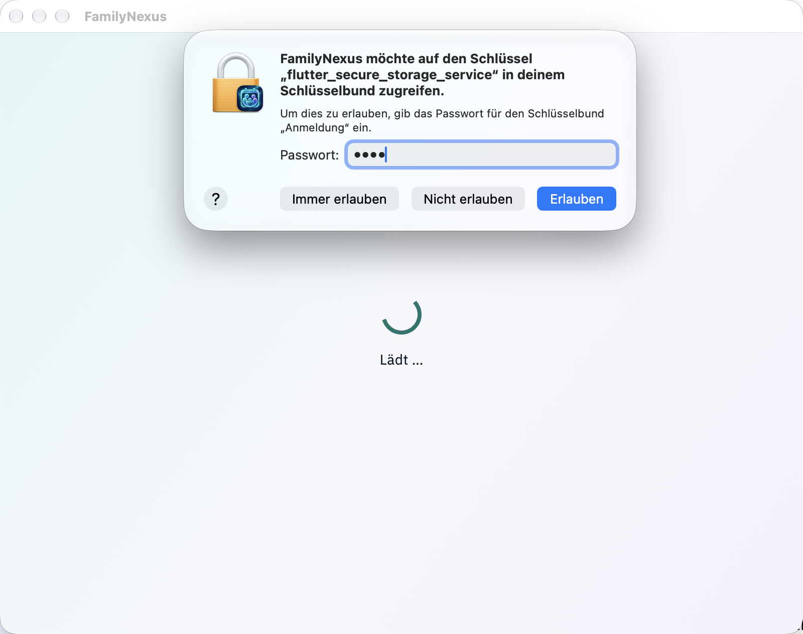
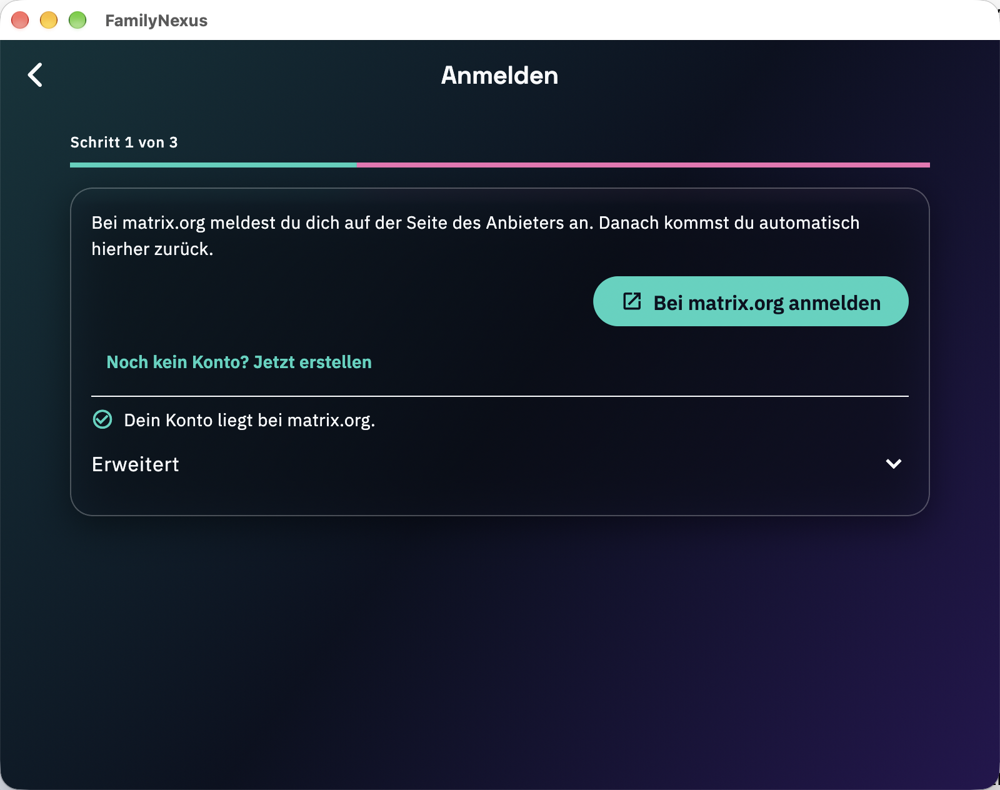
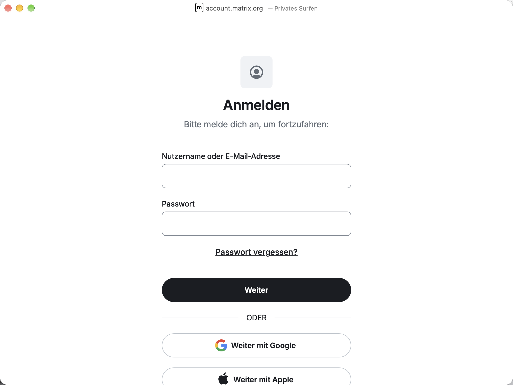
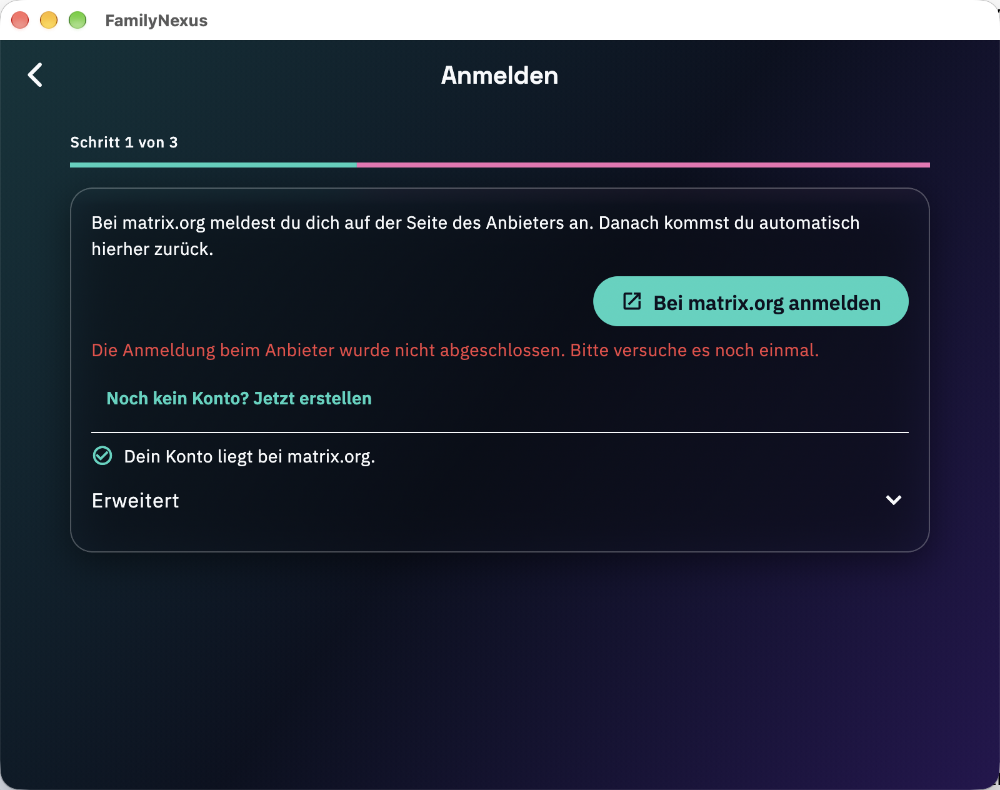
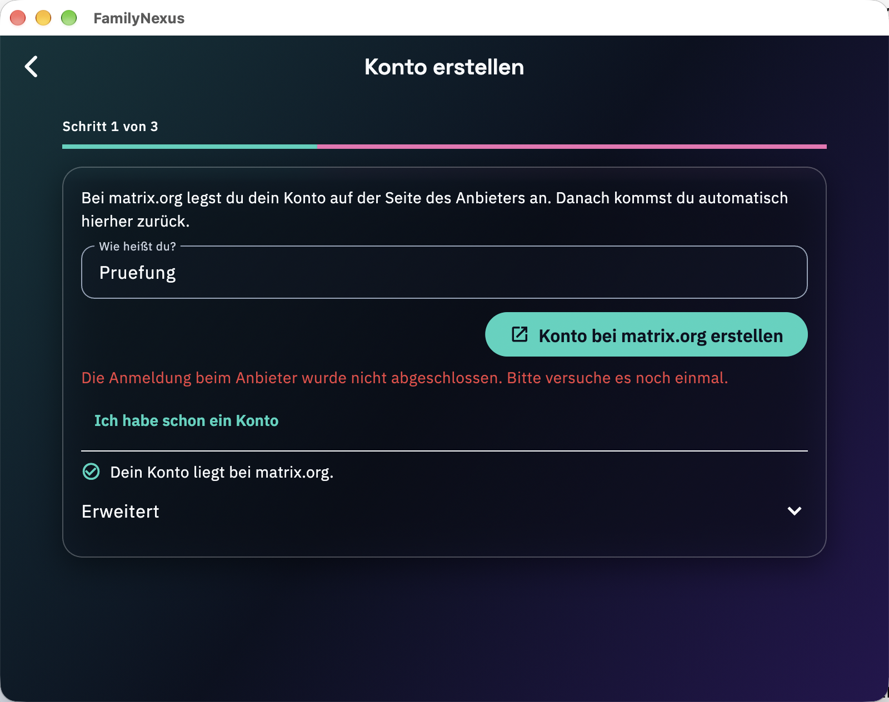
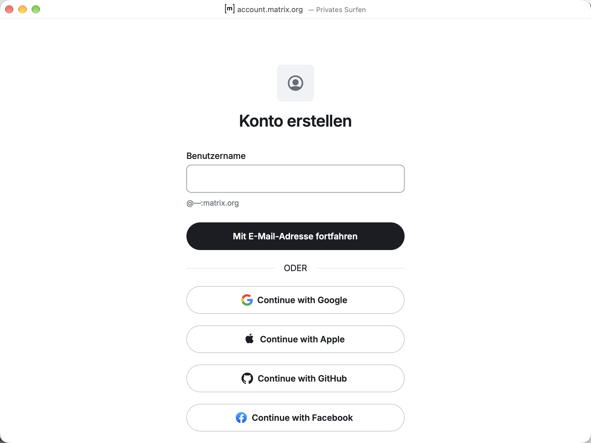

Prüfung, ob Anmeldung und Kontoanlage bei matrix.org in einer System-Sitzung (ASWebAuthenticationSession) laufen, wie es Apple für den Browser-Weg verlangt.
Die App öffnet Anmeldung und Kontoanlage in einer System-Sitzung, nicht per Rückfall im normalen Browser. Belege: Das Fenster trägt den Zusatz „Privates Surfen“ (die App startet die Sitzung als prefersEphemeralWebBrowserSession), hat keine Safari-Werkzeugleiste und heißt für Safari matrix-authentication-service. Ein Rückfall über launchUrl würde ein normales Safari-Fenster öffnen.
Für das Auge sieht es trotzdem nach Safari aus. macOS zeigt die Sitzung als Fenster, das Safari hostet. Während der Sitzung ist Safari der Vordergrundprozess und die Menüleiste zeigt „Safari“. Das ist sehr wahrscheinlich der Grund für Apples Formulierung „taken to the default web browser“. Mein Abnahmekriterium 2 („kein Browser im Vordergrund“) war für macOS zu streng gewählt und ist wörtlich nicht erfüllt. Es gilt ⚠, nicht ✕, weil das Verhalten dem Apple-Verfahren entspricht.
Empfehlung: In App Store Connect bestätigen, dass ASWebAuthenticationSession verwendet wird, die macOS-Darstellung als Safari-gehostetes Fenster erklären und einen Screenshot (Abbildung 3) beilegen. Details und Antwortentwurf in Abschnitt 5.
| Nr. | Schritt | Ergebnis | Beobachtung |
|---|---|---|---|
| A-01 | Versionen, Signatur, Entitlements, Standardbrowser erfassen | ✓ bestanden | 1.2.3 (29); Kanal de.inneso.familynexus/webauth im Binary; network.client, kein network.server; Standardbrowser Safari. Firefox und Vivaldi liefen mit. |
| A-02 | Prüfkopie starten | ⚠ mit Befund | Willkommensseite erscheint. Vorher fragte macOS nach dem Passwort des Schlüsselbunds „Anmeldung“ (Abb. 1). Ich habe nichts eingegeben; der Dialog verschwand nach rund 45 s. Bekannte Ursache bei ad hoc signierten Builds (Lauf 26/27), kein Fehler der Anmeldung. |
| A-03 | „Ich habe schon ein Konto“ | ✓ bestanden | Matrix.org ist vorbelegt („Dein Konto liegt bei matrix.org“), Knopf „Bei matrix.org anmelden“. Das Symbol am Knopf ist ein „extern öffnen“-Pfeil (Abb. 2). |
| A-04 | „Bei matrix.org anmelden“, 6 s warten | ⚠ mit Befund | Anmeldeseite account.matrix.org in der System-Sitzung (Abb. 3). Safari wird Vordergrundprozess, Safari-Fenster 0 → 1. Titel „Privates Surfen“, keine Werkzeugleiste. Kriterium 1 erfüllt, Kriterium 2 wörtlich nicht (siehe Abschnitt 1). |
| A-05 | Sitzung schließen (Abbruch) | ⚠ mit Befund | FamilyNexus ist wieder vorn, Safari ohne sichtbares Fenster. Die App zeigt rot „Die Anmeldung beim Anbieter wurde nicht abgeschlossen. Bitte versuche es noch einmal.“ (Abb. 4). Plan erwartete keine Meldung; der Hinweis ist gewollt und der Knopf bleibt bedienbar. |
| A-06 | A-04/A-05 wiederholen | ✓ bestanden | Zweite Sitzung öffnet und schließt genauso. Safari hält danach ein unsichtbares Fenster (visible=false), das nicht stört. |
| A-07 | Kontoanlage über „Neue Familie gründen“ | ✓ bestanden | Name „Pruefung“ eingetragen, nichts abgeschickt. „Konto bei matrix.org erstellen“ öffnet account.matrix.org/register in derselben Sitzung (Abb. 6). Abbruch führt in die App zurück, keine sichtbaren Safari-Fenster. |
| A-08 | Aufräumen | ⚠ mit Befund | App beendet, Prüfkopie nur im Scratchpad. Container de.inneso.familynexus.apple4 lässt sich nicht löschen (macOS: „Operation not permitted“), er enthält nur die geschützte Metadatendatei. Nutzer-Container unberührt. |
| A-09 | Anderer Standardbrowser | ○ nicht durchgeführt | Standardbrowser ist Safari. Systemeinstellung des Nutzers wurde nicht verändert. Aussagekräftig wäre ein Test mit Chrome oder Firefox als Standard. |
Alle Aufnahmen stammen vom laufenden Release-Build. Der Passwortvorschlag des Schlüsselbunds im Anmeldefenster wurde nicht bedient; Aufnahmen, die ihn zeigten, sind aus der Evidenz entfernt.



logs/A-04.txt).


account.matrix.org/register). Angeboten werden E-Mail, Google, Apple, GitHub und Facebook; es wurde nichts ausgefüllt.ASWebAuthenticationSession (MainFlutterWindow.swift:124) und nicht zu launchUrl.ASWebAuthenticationSession beruht auf der Darstellung (indirekt, aber eindeutig typisch).Apple lässt den Browser-Weg zu, wenn ASWebAuthenticationSession genutzt wird, und bittet sonst um Bestätigung. Das Verhalten entspricht dem. Dass der Prüfer „den Standardbrowser“ sieht, erklärt sich durch die Darstellung auf macOS: Menüleiste und Dock zeigen Safari. Die App hat darauf keinen Einfluss.
Thank you for the feedback. FamilyNexus uses ASWebAuthenticationSession on macOS and iOS for sign-in and account creation with the identity provider (matrix.org). The app does not open the default browser for these flows. On macOS the system presents the session in a Safari-hosted window titled "account.matrix.org – Private Browsing" without toolbar or tabs, which can look like Safari. The attached screenshot shows this window above the app. After closing or completing it, the session returns to FamilyNexus. The build you reviewed is stated as 1.2.1 (27); our build 27 is version 1.2.2, the current submission is 1.2.3 (29). If you still see the default browser, could you tell us at which step and attach a screenshot or recording?
Der Text ist ein Entwurf. Er wird nicht von mir abgeschickt; der Nachtest auf einem signierten Build und mit echter Anmeldung ist vorher sinnvoll (siehe „Nicht belegt“).
| Prio | Vorschlag | Warum | Aufwand |
|---|---|---|---|
| 1 | Symbol der Knöpfe „Bei matrix.org anmelden“ und „Konto bei matrix.org erstellen“ von „extern öffnen“ auf ein Anmelde-Symbol ändern. | Der Pfeil signalisiert „verlässt die App“ und verstärkt den Eindruck, es ginge in den Browser. | klein |
| 2 | Review-Notizen für macOS um den Satz ergänzen, dass die Sitzung als Safari-gehostetes Fenster erscheint, mit Screenshot (Abb. 3). | Der Prüfer weiß dann vorab, was er sieht, und kann es der Sitzung zuordnen. | klein |
| 3 | Hinweis auf den Abbruch (rot) als neutrale Info darstellen statt in Fehlerfarbe, mit Text „Anmeldung abgebrochen“. | Ein Abbruch durch den Nutzer ist kein Fehler; Rot kann den Prüfer verunsichern. | klein |
| 4 | Testplan v02: Kriterium 2 für macOS ersetzen durch „Fenster ist toolbarlos und privat; Safari darf Vordergrund sein“, A-09 auf einem zweiten Mac-Konto mit Chrome als Standard. | Das jetzige Kriterium ist auf macOS nicht erfüllbar und liefert dauerhaft ein ⚠. | klein |
| 5 | Die Logzeile aus openInApp bei Rückfall sichtbar machen (z. B. in einer Debug-Anzeige) oder per Test-Hook auslesbar halten. | Damit lässt sich der Codepfad künftig direkt belegen statt aus der Darstellung zu schließen. | mittel |
launchUrl wurde nicht gefahren.